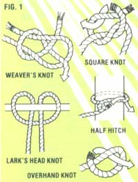
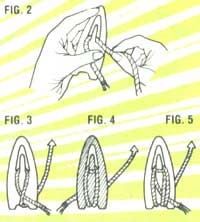
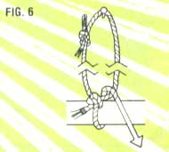
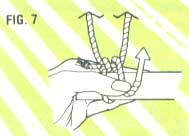
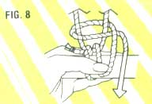
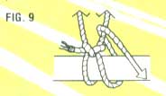
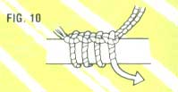
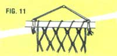
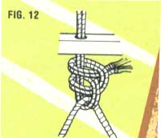
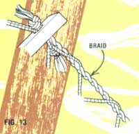

There are few experiences more restful than relaxing on a summer's afternoon - while the sun bakes well-being into your soul - in the cradling arms of a good hammock. Of course, the swinging lounges can be very expensive ... but if you can scrounge some 10 to 20 hours of work time and about $20 for materials, you might well be able to tie a netted slumber nest of your own. Here's how.
To make a one-person hammock, you'll need about two pounds (three, if you want a two-person sling) of seine twine, No. 40 to No. 46; two metal rings 2 to 3 inches in diameter (use welded steel or brass); two hardwood support bars measuring 1 1/2-by-1 1/2-by-33 inches each (make them 48 inches long for the double hammock); a smooth gauge stick that's about 3/4-by-1 1/2-by-12 inches; and a netting shuttle.
Now, check the accompanying sketches (Fig. 1) in the Image Gallery to be sure you know how to tie a square knot, a weaver's knot, a half hitch, a lark's head knot, and a plain overhand knot. Then find yourself a comfortable spot with a handy hook, nail or knob to hang your work on, and begin.
You'll first want to cut a 3-foot length of twine, and square-knot its ends together. This is called the starter loop. Hang it from that handy nail or knob, then wind the netting shuttle full of twine (as depicted in Figs. 2-5 in the Image Gallery), and tie the free end of the shuttle cord to the starter loop, using an overhand knot.
Next, take the gauge stick in your left hand (unless you're a southpaw, in which case, simply reverse all the directions given here), and place it behind the shuttle cord, right up against the starter loop. Draw the shuttle up in back of the stick, pass it through the starter loop (Fig. 6, see Image Gallery), then bring it back down in front of the stick. Pull the twine taut, and pinch it against the stick with your left thumb to hold it in place (Fig. 7, see Image Gallery).
Raise the shuttle again - still in front of the stick - and make a half hitch around both strands of the starter loop (Fig. 8, see Image Gallery). Now, pull the twine down in front of the gauge stick, letting go with your left thumb and tightening the half hitch as you do so. Congratulations, you've just completed your first cast-on "stitch"!
Go on to repeat the same process by bringing the shuttle around and up in back of the stick, passing it through the starter loop, etc. (Fig. 9, see Image Gallery). Continue this procedure until you've made 20 snug and even loops around the gauge stick (you'll need 30 for the two-person hammock). Incidentally, be sure you make your half hitches in the same direction each time (that is, so that the "over" strand is always taken from the same side) so your work will lie smooth (Fig. 10, see Image Gallery).
At this point you should flip the gauge stick over so that the shuttle cord hangs on the left side (you'll work from left to right on each row). Then muster up a little courage and pull out the stick, letting the loops dangle free. Now, hold the gauge in your left hand, just under the work ... bring the shuttle and its cord down in front, up behind and through the first cast-on (not starter) loop, and down in front of the stick again. Pinch the twine with your thumb, make a half hitch around the two strands of the first cast-on loop, and carry the shuttle down and around the gauge stick again. This time, pass the shuttle through the second cast-on loop, and continue as before. Repeat the process through each cast-on loop in turn, making sure to keep the work even. (This initial row can be a purple pain in the neck, but don't let it get to you. If you persevere, the task will - honest! - get easier later on.)
Soon all the cord on your shuttle will be used. Reload, and knot the free end of the new twine to that of the previous cord, using a square or weaver's knot.
Flip the work over when you reach the end of the first row - as you'll do after finishing each row - and proceed as before. Keep repeating the process until you've netted the length you want (54 rows should equal about 7 feet of netting).
Anytime after completing the second row, you can cut the starter loop and pull it free from the cast-on loops. After doing so, support your work by any convenient means - such as sturdy dowel, as shown in Fig. 11 (see Image Gallery) - but do make certain that whatever you use will hold the piece evenly.
Drill 20 holes (30 for a two-person hammock) through each of your two hardwood bars 1 1/2 inches apart on center, and beginning 2 1/4 inches in from each end. The end holes should be 1/4 to 5/16 inches in diameter, and all the others 3/16 to 1/4 inches.
With that done, cut four cords each of the following lengths: 46, 47, 48, 49, 50, 51, 52, 54, 56 and 58 inches. You'll have a total of 40 pieces, or 20 for each end of the hammock. (If you're making the double model, cut the same 40 lengths plus four each of 60, 62, 64, 66 and 68 inches long - making 60 pieces in all.) These will form the fan-shaped arrays of strings between the end rings (by which you'll hang the hammock) and the supporting hardwood bars. The longest pieces will, of course, be secured to the outside holes in each bar, and the strings will get shorter as they near the center.
Now, you can get back to the tying (or is it trying?) part of the project. Loop one of the four longest cords around a metal ring with a lark's head knot, thread both the ends through the outermost hole in one of the bars, and secure the cord to the top left-hand loop of the hammock mesh, using a double half hitch. Go on to fasten each cord - in turn - from the ring, through the next support-bar hole, to a loop the net (Fig. 12, see Image Gallery). When you've completed all 20 strings, repeat the procedure on the other end of the hammock.
To begin the end of this “knotty” chore, make a pair of three-cord braids. These will be used to add a bit of firmness to the hammock’s edges. To allow for the necessary “give”, you’ll want to make each braid 3 inches shorter than the stretched-out length of the netting - but be generous when cutting the twine, remembering that the cords will end up at least 10 percent shorter after braiding.
Tie the three ends together with an overhand knot, braid the cords, and thread the untied ends through the outside hole in one hardwood bar. Next, make a loose knot in the end of the braid and weave it in all out through the outer meshes of the net (Fig. 13, see Image Gallery). Then undo the loose knot, thread the braid through the outside hole of the bar at the other end of the hammock, and make a tight overhand knot to hold it in place. Repeat this process on the other side.
Now, hang your hammock between two convenient trees - and have a swinging summer!
The preceding article was adapted, by permission, from a project described in Vol. 1. No. 2 of Handmade magazine, published quarterly by Lark Communications.
|
MOTHER EARTH NEWS STAFF There's nothing better than lounging outdoors in a comfy hammock. |
 MOTHER EARTH NEWS STAFF |
 MOTHER EARTH NEWS STAFF |
|
 MOTHER EARTH NEWS STAFF |
 MOTHER EARTH NEWS STAFF |
 MOTHER EARTH NEWS STAFF |
|
 MOTHER EARTH NEWS STAFF |
 MOTHER EARTH NEWS STAFF |
 MOTHER EARTH NEWS STAFF |
|
 MOTHER EARTH NEWS STAFF |
 MOTHER EARTH NEWS STAFF |
|